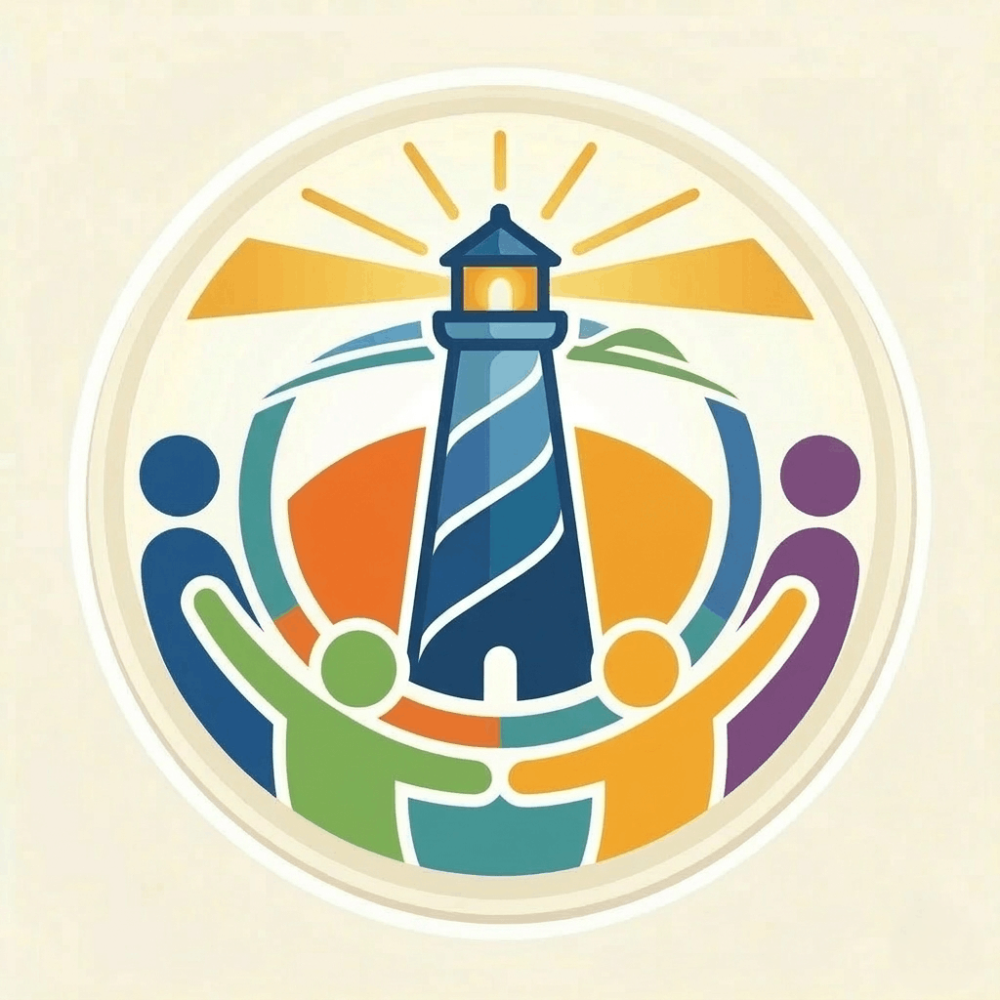

Good deeds. Well recognised.
Collect Unity Points for helping. Unlock 37 badges across helping and request milestones, redeem profile skins and rise on the community leaderboard.

BEACONNEAR EACH OTHER. HERE FOR EACH OTHER.
Building bridges, one neighbour at a time.
Community help, lost & found, volunteering and reliable news. One trusted platform for UAE residents.
01 / A hand, just around the corner
You pass each other in the lift. Now you can lend a ladder, help with groceries, or ask for a hand. Find nearby help requests by category, distance and availability.
Find your helping hand ↗02 / What is lost can find its way home
Lost keys in the lobby? A bag left nearby? Share photos, mark an item lost or found, and contact its owner or finder directly.
Explore lost & found ↗03 / A little time. A lasting difference.
Discover community opportunities from Volunteers.ae. Find dates, locations and registration links for beach cleanups, food drives and more.
Find a way to give back ↗04 / This is what belonging looks like
Different floors, backgrounds and routines. One place to ask for help, stay informed, thank a neighbour and give something back.
Real needs. Useful connections.
Four ways to make life a little better,
right where you are.
Everyday help, from someone nearby.
Community help ↗ 02 / FIND YOUR WAY BACKBring the little things back home.
Lost & found ↗ 03 / MAKE TIME MATTERFind a cause. Show up. Make it count.
Volunteering ↗ 04 / KNOW YOUR WORLDUseful stories. Sources you can follow.
Reliable news ↗An interactive example of the community.
Illustrative content, not live activity.
Collect Unity Points for helping. Unlock 37 badges across helping and request milestones, redeem profile skins and rise on the community leaderboard.
Message neighbours directly, receive notifications and post public appreciation. Your profile keeps track of resolved chats, volunteer rank and ratings.
Earn Unity Points for helping, unlock 37 achievement badges, and redeem profile skins. Celebrate neighbours on the Thank You Wall, view the leaderboard, and track resolved chats and ratings.
Choose your region, discover nearby requests on the neighbourhood map, and explore the platform in English, Arabic or Hindi.
English · العربية · हिंदीAbu Dhabi · Dubai · Sharjah · Ajman · Umm Al Quwain · Ras Al Khaimah · Fujairah
Enter the identity gate in English, Arabic or Hindi.
Take a live selfie holding your physical Emirates ID. Digital scans are not accepted.
Access help requests, lost & found, local opportunities and reliable news.
Earn Unity Points, unlock badges, customise your profile and build your community rank.
Our own verification process.
Not a UAE government service or database check.
Community works when trust comes first. Members complete an Emirates ID verification step before taking part.
Create your account and choose your area.
Complete the platform’s live selfie and physical Emirates ID check.
Ask, offer, volunteer, and connect with your community.
Keep your conversations. Give community help a place of its own.
The same idea can bring schools, workplaces and organisations closer. A shared place to communicate, support one another, and build a stronger community.
Bring Beacon to your organisation ↗Meet the person behind the ideaOur story ↗A neighbour brings groceries. Another joins the conversation. Everyday support can include older and disabled neighbours, too.
Illustrative scenarios, not live activity.A private, verified portal for parents, staff and students. Announcements, campus help and lost & found in one place.
A community for employees or tenants, with verified access and structured coordination, run privately for your organisation.
Dedicated communities for residential compounds, HOAs and non-profits that need verification and practical coordination.
A FEW THINGS YOU MIGHT WONDER
UAE residents who want to find nearby help, recover lost items, volunteer and stay informed. Schools and organisations can get in touch to discuss their community needs.
Yes. The interactive demo lets you explore the platform with sample content, without creating an account.
Beacon organises requests, lost items, volunteering and news into dedicated spaces, with location-based discovery and its own member verification process. It gives community activity a structure beyond a single conversation.
No. Beacon of Unity runs in your browser on desktop and mobile.
THERE IS A PLACE FOR YOU HERE
One neighbour. One connection. One beginning.